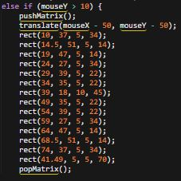
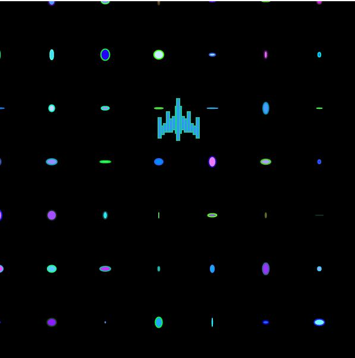
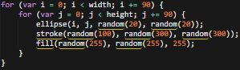
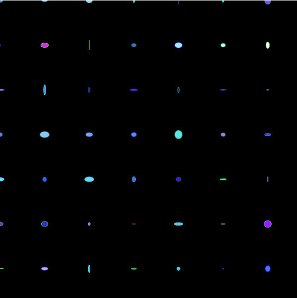
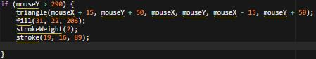
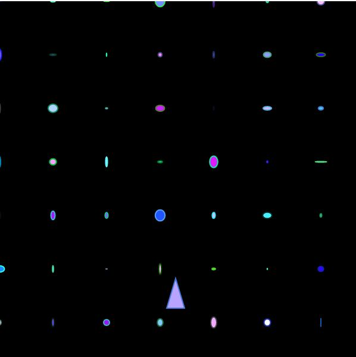
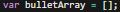
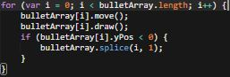
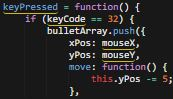
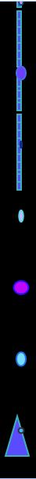

- What I created was an interactive space game like Galaga, where your mouse has the ability to spawn a ship that flys around the screen and the ability to shoot out an infinite amount of lazers. How my project works overall, was with the use of many javascript commands like functions, variables, loops, else/if statments, and many more. In addition, these codes customized by my choice of what I wanted it to look like, and how I wanted the user to interact with the final project. Examples can be like the type of spaceship, the lazer, or the background used to give it a more space theme to it.
What are some specifics of the code and how do those work?
- The were many different codes that I used in the javascript file to structure the entire project. The first ones that I used were multiple shape codes like rectangle codes to create multiple rectangles, because I wanted to make the sprite art that looked like the Galga ship because I thought it would be appropiate for the space theme that I was using. With this code, I had to check out different heights and widths to build a more accurate version of the original sprite art. I wanted to keep it simple by just making the outline of the ship rather than just replicating the exact same thing. The code on the other hand, has multiple different elements that manage to make this entire happen. THe first one is the else if statement, which helps it spawn and keep flying on the top half of the screen, until go you to the bottom half and that it will change into a completely different ship. The next one is the pushMatrix and popMatrix, which helps to allow the screen to stay in a specific coordinate which is mainly the center of the screen. The final one is called translate, which mainly helps the ship or multiple shapes move around the screen based on where you mouse is located on both the top and bottom half of the screen.  
- The next code that I used was a loop code, which I used to bring up some certain elements to enhance the page's visuals. The main example that can take this is the stars that were used in the background, which had random chnages in the colors and shape because of the use of the conditions. This is because I wanted to give a more shiny and alive background to the page rather than simple boring white dots that represent the stars instead. So for the page, I wanted to multiple different colors that mostly included different shades of blue, purple, or even white, because I wanted it to look cosmic and futuristic. Along with the background, With the spaceships, I also passed down the same rgb choices to the ships, just to make it more consistent and simple with all the colors. The elements that I used for this code, were also what helped piece the entire thing together and created the animated background. The first one is that loop's conditionals which are numbers and variables that are used inside the parenthesis. These allow to either affect the height and width of all the circles, or translate the group of shapes based on which side of the screen their on. The ones on the bottom are ellipse which allows to create the circle, the fill which is the color, and stroke which affects the border's color of all the circles. In addition, all three of these have different conditions to them, such as stroke and fill having random in it. That allows them to go through every single rgb color(mainly shades of blue, purple, or even white) that there is for an infinite loop.  
- After the loop code, I used if/else if statements that help make the page more interactive with the use of the mouse. How I made this more interactive, was by having the ships change appearances depending on where you locate the mouse. From there, I thought of making the second spaceship look like the one from Asteroids, since I thought of it being the most simple to make and needed to find something else space related to my generative art page. With both ships, I found it a little difficult for the shape to follow mouse, because of each individual measurment needed to be relative to the mouse on screen. Most of invovled subtracting or adding all the coordinates because it was pretty difficult placing both ships on an appropiate spot on the mouse, but after a lot guessing and checking I managed to place both ships on the best position I can find. With codes, I already talked about the making of the Galaga ship in the first bulletpoint, but the Asteroid one is different becaue it doesn't use any push or pop matrix because of it belong in an if statment. What that statement does is simply telling that, if the mouse y position is set somewhere greater than 290(mainly the lower half of the screen) it will appar on the part of the screen when your mouse hovers over it. Same can be said for the Galaga ship because it has a condition say if mouse Y position is less than 10(mainly the top half) it will appear there instead. The other thing about the Asteroid ship is that it also contains the same fill and stroke which was explained in the second bulletpoint, but it also contains strokeweight which helps thicken or thins the border of the shape.  
- Finally, the last and the biggest code that was used for this, was an array to make both spaceships shoot out a lazer. The reason I wanted to choose to do this, is because I wanted to make this page even more interactive and that I thought this might be the best idea to do since I just wanted something that the user can be able to do other simply fly around the screen and do nothing. With the making of the array code, I was being supported by my teacher, Mr.Hesby, and his assisstant, Adrielo, to help me structure out the entire thing. With the array, the first thing to make is the var bulletarray=[] which basically holds an entire list of objects together. Then there's certain objects or codes that are held inside of the array. Some of them I can be able indentify, such as the keypressed function which allows the ability to spawn the lazer with a certain key on the keyboard. The other aspect of this code is the if statement, which allows the spacebar to shoot out the laser. This is mainly indicated by the number 32 inside of the if statement's conditions, which is actually the keycode that is being activated by this condition, and that is why it says keycode equals 32. The other ones such as xPos: mouseX and Ypos: mouseY represent the location of where the lazer will be shot. What this means is that, the laser will be shot out based on the location of your mouse on the x or y planes of the screen. For the final one is the move function which contains this.yPos -= 5, which is basically the speed of the bullet. Finally, there belongs .move and.draw codes and if statement in the second picture. What I know from the best of my extent, is that these make up the design of the lazer and limit how far it will move up towards the top of the screen.    
What choices did you have to make and how did you go about making them?


What is one thing that you learned that you will make sure to remember?
- One thing that I will make sure to remember the next time we come back together as a class, is all the past lessons that we learned throughtout this new course of expeditions. I will have to remember how to make functions, loops, else/if statements, or even arrays, so sometime during my own time or on the next round of expeditions, I can probably enhance the quality of my interactive generated art page or use these new skills into the next project to make sure that we still remember what we learned as a classroom.
What are the next steps you would do in order to improve your project if you had infinite time?
- In general, I would probably improve the quality of the page itself. I would want to increase the interactivity of it, maybe try different codes in html or javascript, gain feedback from other students to see what their main opinion is on my coding or page, self-study to discover more codes that I can benefit from, or simply make an actual playable video game that I can share with everyone. Another important thing to remember is that, I must try to continue coding outside of expeditions and keep on remembering all the lessons we learned during the last two expeditions from the past year.